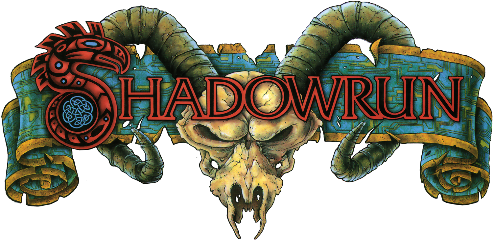
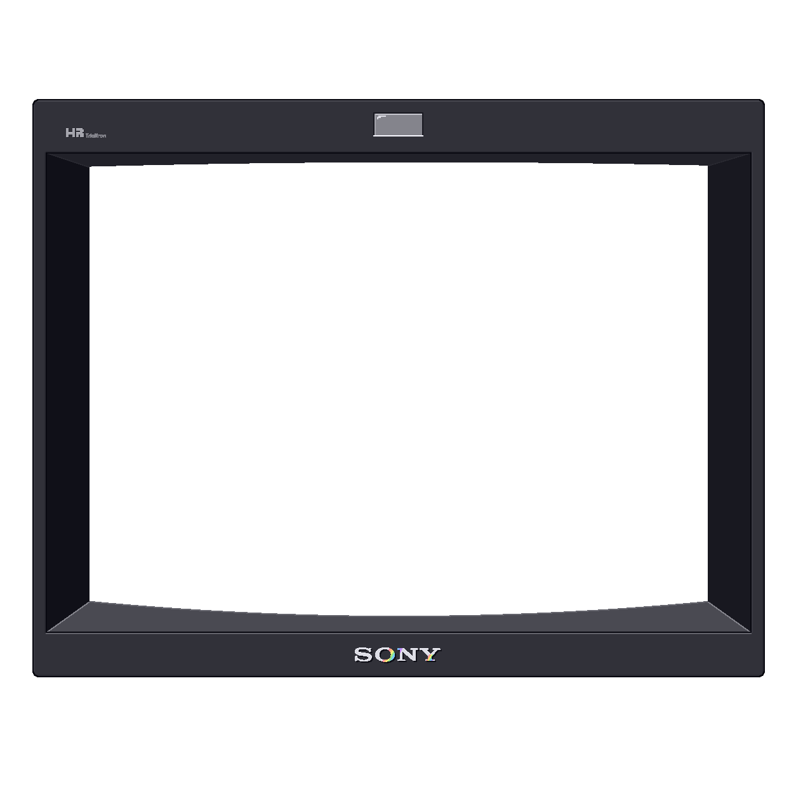

Loading game data …


This page runs without cross-origin isolation, so input reacts with a delay. Please open it through npm start.
npm start
Tribute soundtrack arranged, performed and produced by Julian Daniels
Original soundtrack by Marshall Parker
https://www.juliandaniels.com/
This project on GitHub:
https://github.com/StefanKubsch/SNES_Shadowrun
Moving the mouse over the picture shows the glove; in menus the mouse wheel and a click choose. Choose “change”, then press the new key or mouse button. Letters count by their label. A gamepad with standard mapping works without setup. P pauses the game.
Save at a bed or with “Save now” below. Only saved progress is kept in this browser profile; clearing browser data can erase it. Load a slot through “Start saved game” in the game’s title menu.
Save now, without a bed, while Jake can move freely. Loading starts at the entrance of the current room, as after a bed.
The game records all input since the start. If something goes wrong, export the recording and send it along: it replays the session exactly.
Choose gameplay fixes before starting. Reload the page to change them during a game.
Sets the black level.
Sets the picture intensity.